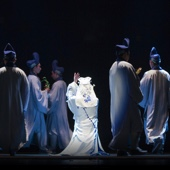
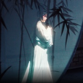
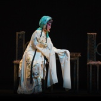
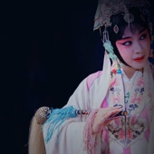
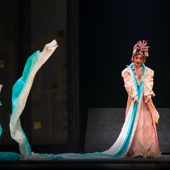

-
他九岁学艺，1978年入浙江昆剧团。师承张正堃、邱唤、沈斌、曲永春、魏克玉等京昆名家。受益于著名昆剧表演艺术家周传瑛和京剧表演艺术家历慧良的指导。林为林是浙江昆剧团第四代“秀”字辈演员，他扮相英武，台风沉稳，功底扎实，以长靠、短打武生戏见长，腿功尤为叫绝，享有“江南一条腿”之美誉。其代表作有《界牌关》、《挑滑车》、《夜奔》、
-
《探庄》、《试马》、《钟馗嫁妹》，及新编历史剧《暗箭记》、《吕布与貂蝉》等。曾多次赴香港、台湾、日本、泰国等地讲学、演出，享有声誉。 他九岁学艺，1978年入浙江昆剧团。师承张正堃、邱唤、沈斌、曲永春、魏克玉等京昆名家。受益于著名昆剧表演艺术家周传瑛和京剧表演艺术家历慧良的
-
指导。林为林是浙江昆剧团第四代“秀”字辈演员，他扮相英武，台风沉稳，功底扎实，以长靠、短打武生戏见长，腿功尤为叫绝，享有“江南一条腿”之美誉。其代表作有《界牌关》、《挑滑车》、《夜奔》、《探庄》、《试马》、《钟馗嫁妹》，及新编历史剧《暗箭记》、《吕布与貂蝉》等。曾多次赴香港、台湾、日本、泰国等地讲学、演出，享有声誉。
《吕布与貂蝉》
标识码：37232519870103004383

 林为林
UNESCO认证传承人
林为林
UNESCO认证传承人
所属项目：
昆曲
- 
- 30:00
- 
- 
- 

01/09
基礎信息
- 出生日期： 1961年12月
- 主要成就： 中国戏剧梅花奖“二度梅”得主
- 民族： 汉族
- 代表作品： 《界牌关》、《挑滑车》、《夜奔》、《探庄》